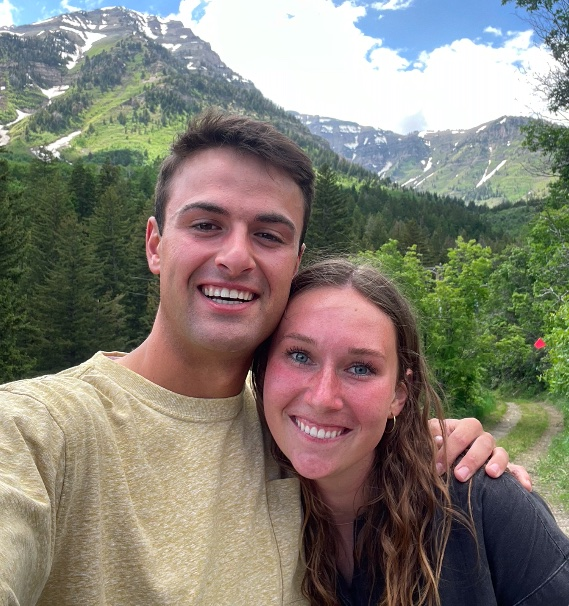

The Marathon
On Saturday May 20, 2023, Kati tore her hip flexor on mile 3 of the Ogden Marathon. Despite her leg having buckled when it tore, she continued running. At times she walked. At times, near to passing out, she crawled along. At mile 24, she did pass out as she came into the water station.
The race official told her that her race would end there. However, determined to finish, she begged him to let her continue. He said he would allow it it her brothers, who had also run the marathon walked with her to the finish. After 23 miles of pain she finished the marathon.
Despite living in Provo as a BYU student, she went home to her family's house in Lindon to rest and recover.
The High Councilman
Carson, recently returned home from his mission in February 2023, was on the High Council speaking circuit. This particilar Sunday, May 21, 2023, he had been asked by two High Councilman to be their speaking companion in two wards sacrament meetings. He gave both talks and felt that they had gone well.
He went on with his Sunday as usual thinking that it would be just another normal day.
The Set Up
Unbeknownst to Carson, Kati had been at home watching his talk on Zoom. Even though they had both grown up in the same stake, Kati and Carson had never met. While watching Carson's talk, Kati texted her mom, Mardi, and said jokingly, "Dang that missionary is really cute. I should have come to church."
Under an impression from the Spirit, after church Mardi got into contact with Carson's mom, Caralee. She asked if it would be appropriate to set up Kati and Carson. Caralee consulted with Carson and he said to send to send over Kati's number. Carson texted and then called Kati. They scheduled a date for the next Saturday.
Their Last First Date
 Carson and Kati soon after their first date.That Saturday, Carson picked up Kati from Provo and they drove back to Lindon. It was to be a double date with Carson's long time friend John. Kati was on crutches and that gave Carson lots of opportunities to help her. They made homemade pizza and then went to John's basement to play pool and foosball.
After playing some pool, they sat on the couch and started to talk. An hour went by and then two and they were still just enjoying a pleasant conversation. Eventually, they decided they had better both get home, but both were determined that this would not be their last date.